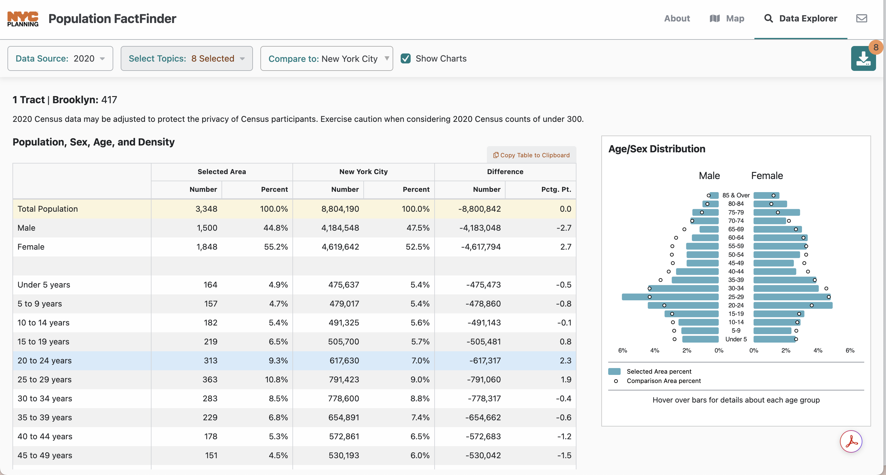

Honors Coursework
CSCI 127: Introduction to Computer Science
Hunter College, City University of New York
Fall 2025
General Notes
- The work below are additional to the general Coursework required for CSCI 127. Students enrolled in the honors section are responsible for both the standard coursework as well as those below.
- There is a separate honors section of Gradescope to submit your programs.
- HC 1: Subway Terminus Due Date: September 4

Anita Xin Chen, circularsquare.github.ioThroughout the semester, we will focus on transit-oriented development in New York City. In particular, we will analyze and visualize data for the neighborhoods adjacent to subway stations. The above image shows the number of people who live in the catchment area of each subway stop. The catchment areas are colored by the subway line (e.g. the IND 8th Avenue Express lines (A/C/E) are colored blue) and the size of the dot reflects the number of residents for whom that stop is the closest.
To begin, pick a subway line (i.e. choose one and sign up on Blackboard). Note that we have split the longer lines into pieces. Each subway line has an associated terminal stop. Create a single page summary of the neighborhood around the terminal that includes:
- Name of the neighborhood (include it and subway line in the title),
- The zip code(s) of your neighborhood (many tools for this, including Google Maps and USPS zip code look-up),
- The census tracts encompassing your neighborhood (see Census Tract Finder),
- A map of New York City with your neighborhood highlighted,
- An photo or image of the subway stop or one that captures your neighborhood,
- The demographics of your neighborhood, and
- The distance of your neighborhood to Hunter College and to Empire State Building.
Upload a .pdf to the assignment HC 1 in the honors section of Gradescope.
Note: Unlike the Python code, it is not automatically graded.
- HC 2: Walking in NYC Neighborhoods
Due Date: 11 September
Urban planner, Jeff Speck, argues that if a city succeeds at being walkable (and by extension, bikeable), it excels at having a high quality of life (see his TED talk).
What fraction of the neighborhoods along your subway line are walkable?
- Make a list of the stations on your subway line. For each, include:
- Name of Station
- Zipcode
- Walkability Score
- Working in pairs or triples, choose 3 neighborhoods from each group member's list. Include in your list, the terminus neighborhoods of each member in the group focused on last week, the lowest scoring neighborhoods in terms of walkability and the highest scoring neighborhoods in terms of walkability.
For each of the chosen neighborhoods:
- As a group, choose a ranking schema from Niche's 2025 Best Neighborhoods (e.g. "Best places to live", "Best for families", "Most diverse", etc or make a customized schema using left sidebar menu). Score the neighborhoods by this schema. Explain which ranking you schema you used. You may find the search by zip code at the top of the page useful (scroll down to find rankings).
- Include how did the neighborhoods do in terms of walkability (order the neighborhoods by their walk scores) versus the Niche schema.
Does your ranking concur with ranking the neighborhoods by walkability? Justify your answer.
Submit a .pdf file analyzing the your rankings and walkability of five neighborhoods chosen for the class. You should use complete sentences and justify your answers with data.
- Make a list of the stations on your subway line. For each, include:
- HC 3: Commuting Costs
Due Date: 18 September
FiveThirtyEight analyzed the cost of commuting in terms of the extra New Yorkers were willing to pay to lessen their commute. StreetEasy did a similar analysis, measuring from given subway stops.
How does distance affect housing prices? To narrow down the analysis, we will focus on the distance to two landmarks: Empire State Building (as a proxy for midtown) and Federal Hall (for the financial district) and 3 locations. You may find WNYC Transit Time or Google Maps useful, as well as CityMapper. Pick, at random, a rentals in each of your terminal neighborhood, your least walkable neighborhood, and your most walkable neighborhood (if those coincide, choose another neighborhood, so you have a total of three neighborhoods). Make sure that your three rentals are comparable. That is, all have same number of bedrooms, same number of bathrooms, and similar features:
- Compute the shortest commute driving to the Empire State Building or Federal Hall for those locations. Assume that you are arriving at 8:30am on a weekday.
- Compute the shortest commute by public transit to the Empire State Building or Federal Hall for those locations. Assume that you are arriving at 8:30am on a weekday and that you walk to the nearest station.
- Compute the shortest commute by public transit, to Hunter College for those locations. Assume that you are arriving at 8:30am on a weekday.
Using the analysis from FiveThirtyEight, analyze what the difference in rental prices should be. Is that difference reflected in the data you collected? Justify your answer.
Submit a .pdf file analyzing the time and cost of commuting of your neighborhoods. You should use complete sentences and justify your answers with data.
- HC 4: Subway Logo
Due Date: 25 September
In Lectures 3 and 4, we introduced colors, specified by hex codes. Use matplotlib and numpy and hexcodes above, create a logo for your subway line.
Submit your Python code and .pdf file including your image to Gradescope.
- HC 5: Initial Website
Due Date: 6 November
Initialize your website skeleton and commit to GitHub. Submit the link to your GitHub repository on Gradescope.
Once complete, read through the following resources. You will need to know these topics for your final presentation.
- HC 6: Additional Data
Due Date: 19 November

NYC Population Fact FinderIn addition to your walkability scores and niche ratings, add at least two more demographic data sources to your data set of neighborhoods (i.e. average income, average rent, average age, racial breakdown, etc)
Some possible data sources include NYC Population Fact Finder, Street Easy, and CCC New York.
Gradescope only accepts PDF or images of submissions so please save your updated data set (the results of merging) table as a PDF and submit the full table via Gradescope.
- HC 7: Analysis Plots
Due Date: 28 November
Create at least 3 plots of your updated data set to help you with the overall analysis question of What features contribute to the niche score
Two plots should show relationships between features in your data set. For example, a scatter plot of the relationship between niche score and average income.
Submit PDFs of your plots on Gradescope.
- HC 8: Adding Plots to Website
Due Date: 10 December
In class on Dec 5, Professor Lynch will demonstrate how to add your plots and qualitative descriptions to your GitHub website.
- Final Presentations: What Contributes to Niche Score?
Due Date: 12 December
In class on Dec 12, as groups (same groups from the midterm presentation) you will present your analysis answering the question what features contribute to niche score?